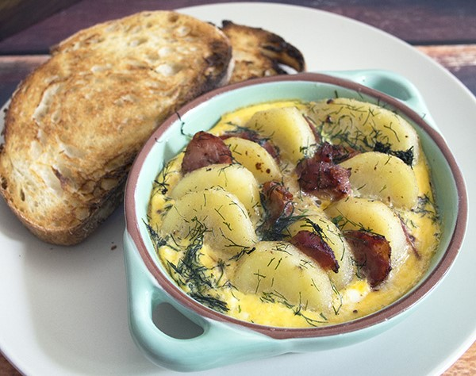

Classic Latvian Breakfast

Ingredients
- 250 grams potatoes
- 180 grams smoked sausage 3mm thick sliced
- 1 tablespoon butter
- 3 eggs
- ½ cup milk
- 3 tablespoons dill
- Freshly ground pepper
- Salt
Instructions
- Step 1: Preheat the oven to 360°F/180°C
- Step 2: Peel and slice your potatoes into 1cm thick slices. Place in pot of cold salted water, bring to the boil and cook for 3-5 minutes. You are par-boiling your potatoes (blanching), not cooking them right through. Strain your potatoes in a colander and set aside.
- Step 3: In a non stick pan fry the smoked sausage until fats are released and browned. Remove sausage from pan, retain released fat. Add butter to the oils in the pan, add potatoes and fry until they start to crisp and colour.
- Step 4: Remove potatoes from the heat and arrange potato slices and sausage in individual oven proof dishes.
- Step 5: In a medium bowl beat eggs, milk and dill, then season with salt and pepper. Check how salty your sausage is, you may not need to add salt. Pour egg and milk mixture evenly over potatoes and sausage.
- Step 6: Place dishes in the oven and cook for 25 minutes.
- Step 7: Serve with crusty bread and enjoy your filling breakfast.
Enjoy your Classic Latvian Breakfast.